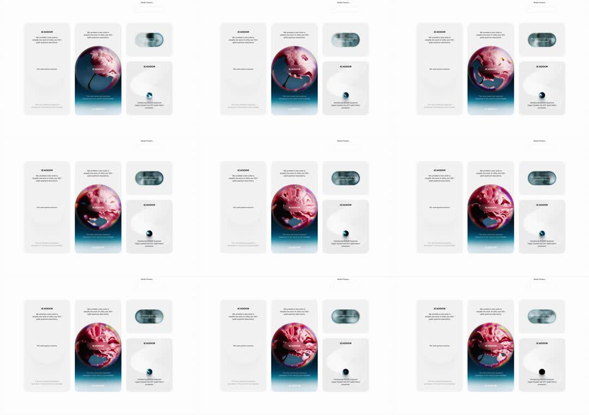

Product page for 'KOODOR' built around a glossy iridescent orb: the hero orb image shifts hue/angle between frames (pink->red->chrome) as the page scrolls, with bento cards showing the orb at small scale; an ambient hue-rotation and perspective drift.
Media
Frame-by-frame

0-30%
Three-column layout: text card, large orb hero card (pink/red glossy sphere with liquid-metal reflections over a teal gradient), spec card with a small orb; orb hue pink-magenta.
30-65%
Orb's internal swirls crawl and its hue rotates toward red/crimson; small orb in spec card mirrors the shift; chrome pill image stays static.
65-100%
Hue continues cycling (pink->red->violet); layout fixed - all motion inside the orb imagery; loop.
Build prompt
Rebuild this interaction 1:1: a product page for "KOODOR" built around a glossy iridescent orb - the hero orb's hue and internal swirls shift (pink -> red -> chrome) as the page scrolls and on an ambient loop; bento spec cards show the orb at small scale mirroring the same shift.
## Integration
Integration: stack-agnostic spec - springs given as stiffness/damping, timed motions as duration + curve, canvas/shader notes are perf guidance only; map every value to your framework and animation library of choice.
## Scene
Three-column bento layout: text card; large orb hero card (pink/red glossy sphere with liquid-metal reflections over a teal gradient); spec card with a small orb; a chrome pill image (static). Layout fixed - all motion lives inside the orb imagery.
## Motion spec
Pattern: ambient loop + scroll-linked hue.
- Ambient: hue cycle ~10s linear through pink-magenta -> red/crimson -> violet; internal swirls crawl (slow offset of the reflection texture); subtle scale breathing +-1%.
- Scroll: orb hue/angle shifts with page position - pink at top, red mid, chrome toward the bento section.
- The small orb in the spec card mirrors the hero orb's shift on the same clock.
- Chrome pill image stays static. Cards, text, grid: no motion.
## Calibration
- Hue cycle ~10s linear; easing on hue reads as a strobe - keep it constant.
- Swirl crawl barely perceptible; if the reflections visibly "move", halve the speed.
- Both orbs share one clock - drift between them breaks the illusion of one material.
## Reduced motion
Orbs hold a single hue frame; no scroll-linked shifting.
## Don't miss
- Motion is inside the imagery only - the layout is a fixed grid, and that restraint is the design.
- Liquid-metal reflections need real texture (image/shader); a flat gradient sphere reads as a ball pit toy.
- The teal gradient backdrop under the pink orb is part of the color story - keep the pairing.